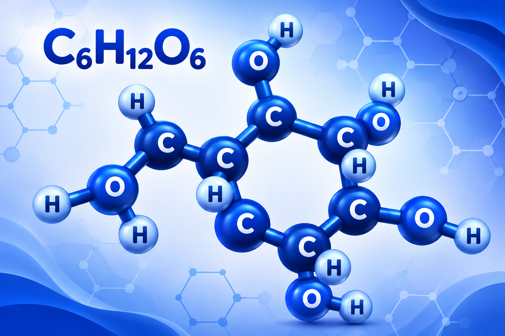
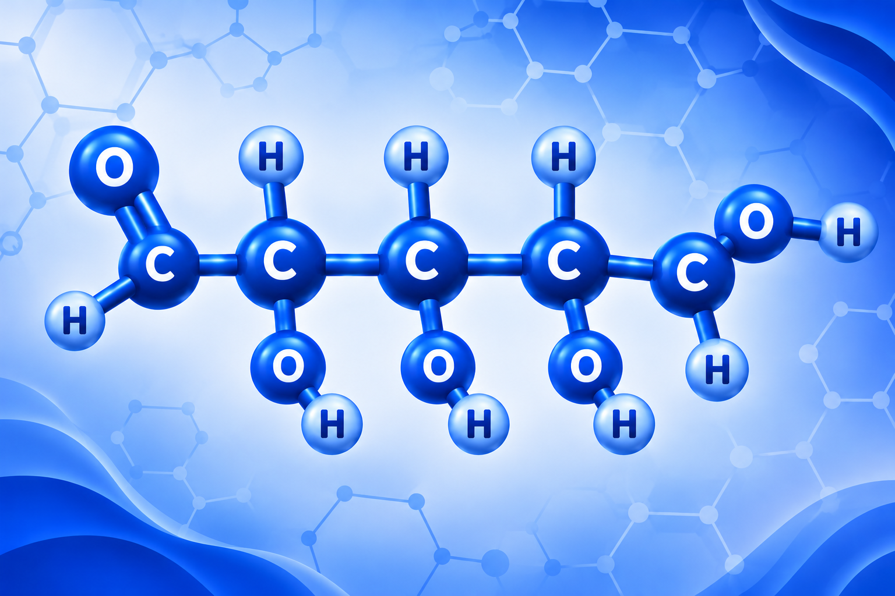
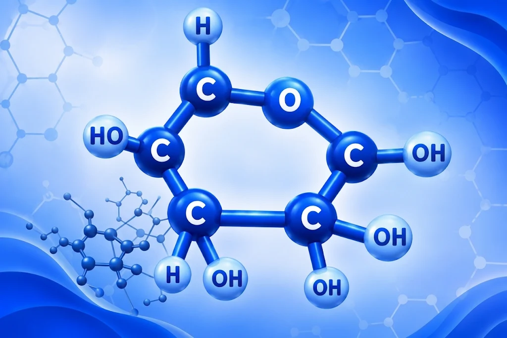

🍞 Carboidratos
São biomoléculas compostas por carbono, hidrogênio e oxigênio, sendo a principal fonte de energia imediata para os seres vivos.
Classificação dos Carboidratos
Monossacarídeos
Açúcares simples que não podem ser hidrolisados em moléculas menores. Exemplo: Glicose e Frutose.
Dissacarídeos
Formados pela união de dois monossacarídeos por ligação glicosídica. Exemplo: Sacarose (açúcar de cana) e Lactose.
Polissacarídeos
Polímeros formados por centenas a milhares de monossacarídeos. Exemplo: Amido (reserva vegetal) e Celulose (parede celular) .
Propriedades e Importância Biológica
Solubilidade: Monossacarídeos e dissacarídeos são altamente solúveis em água devido à presença de várias hidroxilas (-OH). Já os polissacarídeos (como a celulose) possuem baixa solubilidade devido ao seu tamanho gigantesco.
Papel Estrutural: Além de fornecerem energia, formam estruturas rígidas essenciais, como a celulose nos vegetais e a quitina no exoesqueleto dos insetos e crustáceos.
Exemplo do Cotidiano
O consumo de massas, pães e frutas fornece energia rápida essencial antes da prática de exercícios físicos.

Pães, massas, milho e frutas são exemplos de alimentos que contêm carboidratos.
Fórmula Molecular

Representação da composição elementar da glicose (C6H12O6).
Fórmula Linear

Representação aberta da cadeia carbônica da glicose (C6H12O6).
Fórmula Cíclica

Estrutura em anel predominante da glicose em soluções aquosas.